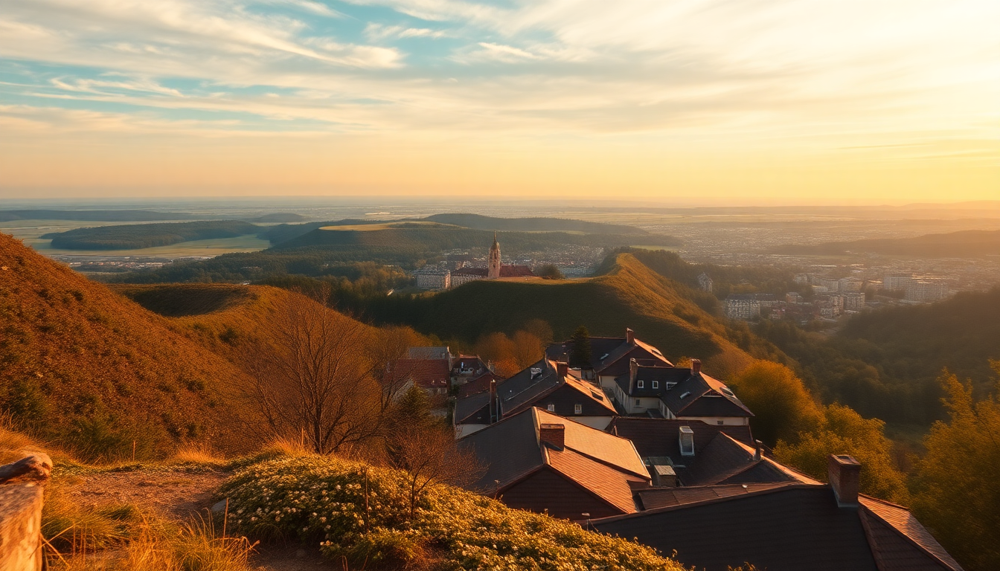

Best Day Trips from Berlin – Potsdam, Dresden & More

I’ve spent enough weekends in Berlin to know that the city’s energy is addictive, but sometimes you need a break from the U-Bahn rumble and the constant currywurst stands. Over the past year, I took five different day trips from Berlin—trains, regional buses, and one ill-advised rental car—to figure out which ones are actually worth the early alarm. Here’s what worked, what didn’t, and exactly how to do each one without wasting time.
Why take a day trip from Berlin instead of staying in the city?
Berlin is huge, but it’s also flat and surrounded by places that feel completely different. Potsdam is twenty minutes away and looks like a Prussian Versailles. Dresden is two hours east and has a rebuilt old town that’s shockingly beautiful. The key is knowing your train line and your exit strategy. I learned the hard way that the RE1 to Brandenburg an der Havel runs every hour, not every thirty minutes—miss it and you’re stuck for sixty minutes in a station with one bakery.
- Potsdam: 20–40 minutes by RE1 or RB22 from Berlin Hauptbahnhof.
- Dresden: 2 hours by IC or ICE from Berlin Hauptbahnhof.
- Leipzig: 1 hour 15 minutes by ICE from Berlin Hauptbahnhof.
- Spreewald: 1 hour by RE2 from Berlin Hauptbahnhof to Lübbenau.
- Brandenburg an der Havel: 1 hour by RE1 from Berlin Hauptbahnhof.
Is Potsdam actually worth the hype?
Yes, but skip the Sanssouci Palace tour if you hate queues. The gardens are free, sprawling, and more impressive than the cramped interior. I walked through the terraced vineyards in late September and had the place almost to myself by 9 a.m. After that, head to the Dutch Quarter for lunch—Alex im Holländischen Viertel does a solid potato soup and doesn’t charge €8 for a coffee. The real gem is Schloss Cecilienhof, where the Potsdam Conference happened in 1945. It’s quieter, cheaper, and has actual historical weight.
- Sanssouci Park: Free entry, open daily until dusk.
- Schloss Cecilienhof: €8 entry, guided tours in English at 11 a.m.
- Dutch Quarter: Walk from the main station in 15 minutes.
- Lunch spot: Alex im Holländischen Viertel, Mittelstraße 3.
How do you do Dresden in one day without rushing?
Take the 7:45 a.m. ICE from Berlin Hauptbahnhof and you’re in Dresden by 9:45 a.m. Walk straight to the Zwinger—the courtyard is free and the porcelain collection inside is worth the €12 if you like Meissen china. Then cross the river to Neustadt for lunch at Mama’s Küche, a no-frills spot that serves giant schnitzels for €9. The Frauenkirche is impressive but crowded; I preferred standing outside and looking at the blackened stones from WWII that were left as a memorial. The Green Vault requires a timed ticket booked days in advance—don’t show up hoping to walk in.
- Zwinger: Open 10 a.m.–6 p.m., closed Mondays.
- Frauenkirche: Free entry, but queues form by 11 a.m.
- Mama’s Küche: Bautzner Straße 34, cash only.
- Green Vault: Book at staatliche-kunstsammlungen-dresden.de.
- Return train: Last ICE back to Berlin is around 9 p.m.
What about Leipzig—is it a good alternative to Dresden?
Leipzig is smaller, cheaper, and feels more alive. I took the 8 a.m. ICE and was sipping coffee at Café Kandler on the market square by 9:30 a.m. The St. Thomas Church where Bach worked is free and has a lovely choir on Saturdays. The Museum der bildenden Künste has a fantastic collection of German Expressionists and costs €8. For lunch, Auerbachs Keller is touristy but the beer hall atmosphere is genuine—order the Leipziger Allerlei, a local vegetable dish. The Spinnerei art complex in the west is a 20-minute tram ride but worth it if you like contemporary galleries.
- Café Kandler: Markt 8, opens at 8 a.m.
- St. Thomas Church: Free, choir performance Saturdays at 3 p.m.
- Museum der bildenden Künste: €8, closed Mondays.
- Auerbachs Keller: Mädlerpassage, €15–20 for a full meal.
- Spinnerei: Tram line 14 to Plagwitz.
Should you visit Spreewald or Brandenburg an der Havel?
Spreewald is a canal network south of Berlin that looks like a smaller, greener version of the Netherlands. I rented a paddleboat from Bootsverleih Lehmann in Lübbenau for €12 an hour and spent two hours drifting past wooden houses and weeping willows. It’s peaceful but not exciting—bring a book. Brandenburg an der Havel is the opposite: a medieval town with a massive cathedral and very few tourists. The Brandenburg Cathedral museum has a fascinating exhibit on the town’s role in the Reformation, and the Steintorturm tower gives a panoramic view for €3. Both are good if you’ve already done Potsdam and Dresden.
- Bootsverleih Lehmann: Dammweg 2, Lübbenau.
- Brandenburg Cathedral: €6, includes audio guide.
- Steintorturm: Open weekends only in winter.
- Best time: Spreewald in May–September, Brandenburg in April–October.
What’s the best way to get around for day trips?
The Deutsche Bahn app is essential—download it and buy a Quer-durchs-Land-Ticket (€44 for one person, €8 for each additional person) if you’re doing multiple trips in a week. For single trips, the Brandenburg-Berlin-Ticket (€29 for one person) covers Potsdam, Brandenburg an der Havel, and Spreewald but not Dresden or Leipzig. I used the ICE for Dresden and Leipzig and the regional trains for everything else. Avoid renting a car unless you’re going somewhere remote—parking in Potsdam is a nightmare and Dresden’s Altstadt is pedestrian-only.
- Quer-durchs-Land-Ticket: Valid on regional trains nationwide from 9 a.m.
- Brandenburg-Berlin-Ticket: Valid on all regional trains in Berlin and Brandenburg.
- ICE tickets: Book early on bahn.de for discounts—Leipzig from €10 one-way.
- Tip: Sit in the quiet carriage if you want to nap; the regular carriages can be loud.
FAQ
How early do I need to leave Berlin for a day trip? For Potsdam, 8 a.m. is fine. For Dresden or Leipzig, aim for 7 a.m. to maximize time. Spreewald and Brandenburg can wait until 9 a.m. since they’re closer and smaller.
Are day trips from Berlin expensive? Not if you use regional tickets. A Brandenburg-Berlin-Ticket costs €29 and covers the whole day. Dresden and Leipzig cost more because of ICE tickets, but booking a week ahead can get you one-way fares for €10–15.
What should I pack for a day trip from Berlin? Comfortable walking shoes, a water bottle, and sunscreen in summer. Trains have air conditioning but it’s weak. Cash is still king in smaller towns—many restaurants in Spreewald and Brandenburg don’t take cards.
Conclusion
- Potsdam is the easiest and most rewarding day trip—go early, skip the palace interior, and walk the gardens.
- Dresden requires a full day and pre-booked tickets for the Green Vault, but the Zwinger and Neustadt are worth the two-hour train ride.
- Leipzig is a cheaper, livelier alternative with excellent food and music history.
- Spreewald and Brandenburg an der Havel are good for quiet, offbeat days—bring cash and patience.
- Use the Deutsche Bahn app and buy regional tickets to save money; avoid driving into Potsdam or Dresden’s center.